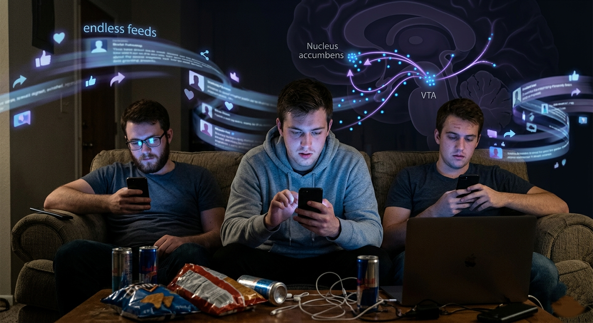
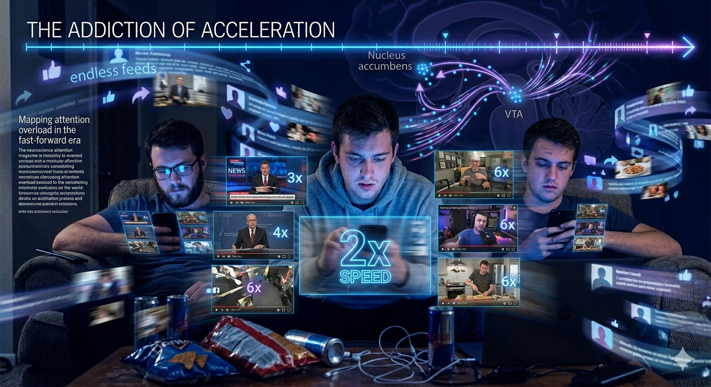
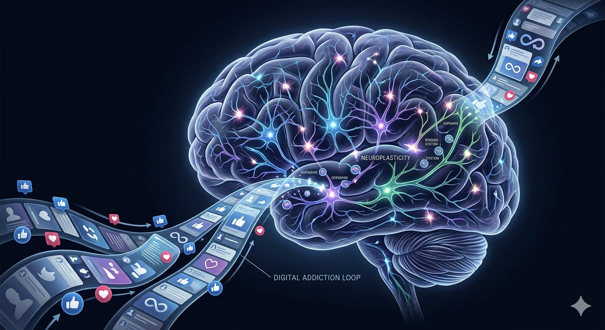
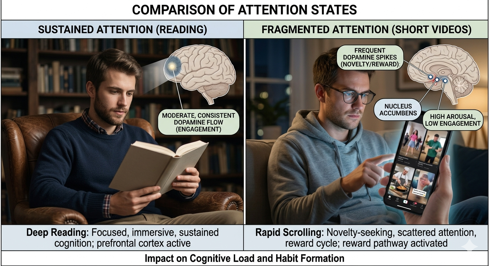
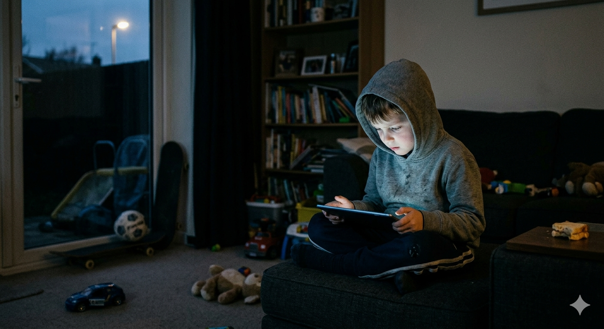
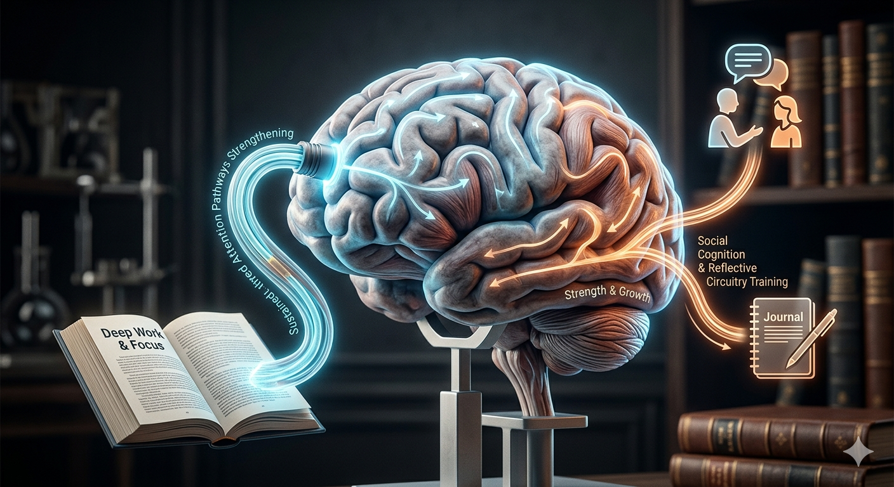

Introduction
For most of human history, sustained attention was an ordinary part of daily life. People spent hours reading books, writing letters, engaging in long conversations, practicing crafts, studying, and focusing on tasks without constant interruption. Watching an entire movie without checking another screen was normal. Reading a novel for several hours was not considered extraordinary.
Today, many people report a different experience. Notifications interrupt thought. Social media competes for attention every few minutes. Content arrives faster, shorter, and more stimulating than ever before.
“As a child, I could spend hours reading books, playing games, watching movies, and focusing on a single activity. Today, even watching a two-hour movie often feels difficult.”
This observation is increasingly common. People describe struggling to complete books, maintain concentration during lectures, or remain fully engaged during conversations. The question naturally emerges:
What Changed?
The answer is unlikely to be a sudden biological decline in human capability. Instead, psychology and neuroscience suggest that modern environments may be reshaping how attention is trained, rewarded, and deployed.
The Rise of Instant Gratification
Short-form platforms such as TikTok, Instagram Reels, and YouTube Shorts have fundamentally altered the rhythm of information consumption.
Every swipe presents a new possibility: a joke, a story, a tutorial, a dramatic event, or a surprising fact. This endless stream of novelty activates reward systems that evolved to pay attention to new and potentially useful information.
Neuroscientists often discuss dopamine not simply as a “pleasure chemical,” but as a signal involved in motivation, anticipation, and reward learning. Variable rewards—where the next swipe might reveal something highly engaging— are especially powerful.
Over time, the brain begins learning that quick rewards are easily available. Activities that require patience and delayed gratification may start to feel comparatively less stimulating.

Why One Minute Feels Too Long
A growing number of people consume content at accelerated speeds. Videos are played at 1.5x or 2x speed. Sections are skipped. Summaries replace full explanations.
“I often speed up videos, movies, and lectures because normal speed feels too slow.”
While speeding up content can increase efficiency in certain contexts, constant acceleration may alter expectations about how information should be delivered.
When the brain becomes accustomed to rapid information flow, ordinary pacing can begin to feel uncomfortable. A one-minute pause may seem unnecessarily long. A slow explanation may feel frustrating.

The Brain Learns What We Repeatedly Practice
One of the most important principles in neuroscience is neuroplasticity: the brain continuously adapts based on experience.
Repeated scrolling trains rapid attention switching. The brain learns to move quickly from one topic to another. Over time, this pattern can become increasingly automatic.
Deep concentration, on the other hand, requires practice. If sustained focus is used less frequently, it may become harder—not because it disappears, but because it is exercised less often.
Attention behaves much like a skill. The activities practiced most often become the activities the brain performs most efficiently.

The Forgotten Reason Phenomenon
Many people have experienced opening YouTube and immediately forgetting why they opened it. Others unlock their phones, open Instagram, and then realize they had no specific purpose.
These behaviors are often explained through habit loops.
A cue triggers an action. The action produces a reward. Repetition strengthens the association until behavior becomes increasingly automatic.
Psychologists refer to this process as automaticity. Behaviors can become so familiar that they occur with minimal conscious decision-making.
Attention is frequently captured before deliberate intention has time to intervene.
Can People Really Focus for Hours?
A common argument is that people can still focus for long periods because they spend hours watching reels or scrolling social media.
However, attention researchers distinguish between sustained attention and continuous novelty consumption.
Watching hundreds of short videos involves repeated context switching. Each clip introduces a new topic, visual style, emotional tone, and narrative.
Reading a book for one hour requires maintaining attention on a coherent structure over time. Watching hundreds of unrelated clips engages a very different attentional pattern.
Both involve attention, but they are not the same kind of attention.

When Boredom Feels Unbearable
“When something becomes boring, I often reach for my phone almost automatically.”
Boredom once played a larger role in daily life. Waiting rooms, bus rides, and quiet moments frequently involved reflection or daydreaming.
Today, nearly every idle moment can be filled with stimulation.
As a result, boredom may feel more uncomfortable than it once did. The brain becomes accustomed to continuous engagement and begins expecting it.
When stimulation decreases, restlessness, sleepiness, or an urge to seek novelty may quickly emerge.
The Attention Economy
Modern technology platforms operate within what researchers often call the attention economy.
Human attention is valuable because attention creates opportunities for advertising, engagement, subscriptions, and revenue.
Features such as autoplay, notifications, infinite scroll, personalized recommendations, and engagement optimization are designed to encourage continued interaction.
This does not require a conspiracy.
Companies respond to business incentives. If a platform keeps users engaged longer, it often performs better commercially.
The result is an environment in which multiple systems compete continuously for human attention.
Consequences of Reduced Attention
Children Growing Up Inside Algorithms
Children today encounter digital environments at increasingly early ages.
Researchers are actively investigating how early exposure to highly stimulating media may influence attention development, self-regulation, executive function, and emotional regulation.
Concerns include reduced opportunities for unstructured play, outdoor exploration, and sustained attention activities.
Evidence remains an evolving field of study, but many researchers argue that understanding these developmental effects is becoming increasingly important.

Attention Is Like A Muscle
The brain adapts to whatever it repeatedly practices.
If We Practice
- Scrolling
- Switching
- Rapid Consumption
If We Practice
- Reading
- Reflection
- Deep Work
- Conversation
Attention is not fixed. It adapts. Like physical fitness, cognitive endurance develops through repeated use.

Can Attention Be Rebuilt?
Research suggests attention can improve when environments support sustained focus. Small changes repeated consistently may produce meaningful effects over time.
Conclusion
The problem may not be that humans suddenly lost the ability to focus.
The problem may be that modern environments continuously train the brain toward distraction.
Attention is not disappearing.
Attention is being redirected, fragmented, and reshaped by the systems we use every day.
Understanding this process is not a reason for pessimism. It is a reason for awareness.
The same brain that adapts to distraction can also adapt to focus.
References
American Psychological Association (APA) — Attention and Cognitive Control.
National Institute of Mental Health — Cognitive Function Research.
Journal of Experimental Psychology — Attention and Task Switching.
Nature Reviews Neuroscience — Neuroplasticity and Learning.
Frontiers in Psychology — Digital Media and Attention.
Journal of Behavioral Addictions — Social Media Usage Patterns.
Replace with full academic citations as needed.